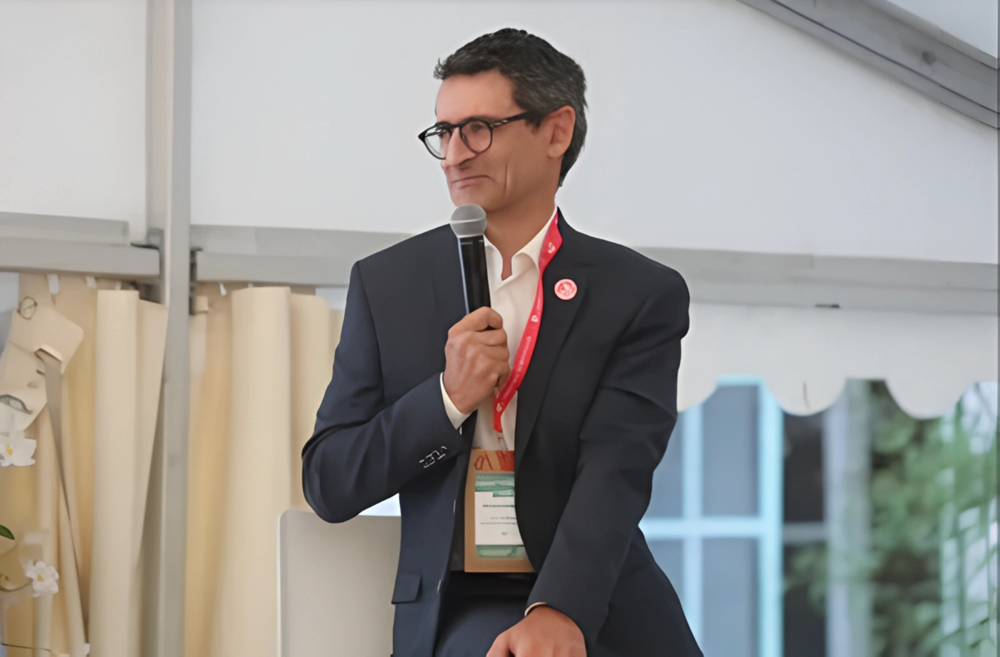

Nous avons l'honneur d'accueillir un invité spécial dans la première interview de notre journal scolaire.

Avant tout, merci d'avoir accepté notre invitation. Pouvez-vous commencer par une présentation de vous-même ?
Merci pour l'invitation. Je m'appelle abdo el aziz el kondossi, et je suis le directeur de cet établissement depuis 4 années. J'ai une longue expérience dans le domaine de l'éducation.
Voudriez-vous nous parler de votre carrière professionnel ?
J'ai commencé en tant qu'enseignant, puis j'ai évolué vers l'administration éducative, occupant plusieurs postes avant de devenir directeur de cet établissement.
Comment gérez-vous l'établissement ?
Je m'appuie sur le travail d'équipe et je veille à maintenir une communication constante avec les élèves, les enseignants et les parents afin de créer un environnement éducatif motivant.
Pourriez-vous nous donner quelques statistiques sur l'établissement ?
Nous comptons actuellement environ [nombre d'élèves] élèves et [nombre d'enseignants] enseignants, avec un taux de réussite de [pourcentage].
Quel est votre projet futur pour l'établissement ?
Nous prévoyons d'améliorer la qualité de l'enseignement en intégrant les technologies dans les salles de classe et en développant des programmes de soutien pour les élèves en difficulté.
Quel conseil donneriez-vous aux élèves de l'établissement ?
Je leur conseille de travailler avec sérieux, d'organiser leur temps et de profiter de toutes les opportunités éducatives offertes par l'école.
Téléchargez votre fichier PDF
Télécharger le fichier PDF